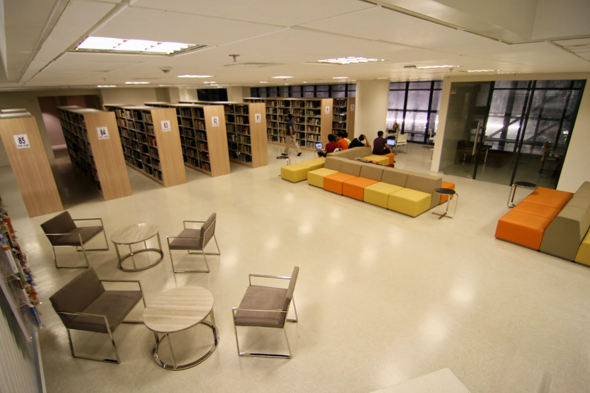

De La Salle Manila
De La Salle Manila
HUMMS
Humanities and Social Sciences
Humanities and Social Sciences Strand or what we usually call the HUMSS Strand is programmed to develop and improve the students’ skills in writing, reading and speaking. Students who would like to take this strand are expected to have their passion in discovering and interacting with the people around them and on how they will deal with them properly. Since this strand focuses more on language and speech, students here are trained to be effective communicators.
Expect to be Challenged
HUMSS Strand are for those who strive to become members of the society wherein they will be given a bigger chance of leaving a mark on the world. Students who take this up are required to deal and interact with a lot of people because that is what this strand is mostly all about. With this, they would be given chances to connect to strangers in different areas, honing them to be effective communicators.
In this strand, subjects focus more on Language and Speech and less on Mathematics and Sciences. Nonetheless, the level of hardness that could be expected in HUMSS equal to the other strands such as those of STEM because the students here would also be loaded with tons of activities, the difference only are the contents, wherein students here would be loaded with hand-outs and readings about different genre than computations and numbers. These are crucial for them since these would be the aid they need for the careers that they would take.
Some of the careers and professions that can be taken by the students who chose HUMSS are lawyers, teachers, psychologists, writers and editors. These are very rewarding careers that allows them to contribute to the society and help shape the world into a better community.
HUMSS Strand are for those who strive to become members of the society wherein they will be given a bigger chance of leaving a mark on the world. Students who take this up are required to deal and interact with a lot of people because that is what this strand is mostly all about. With this, they would be given chances to connect to strangers in different areas, honing them to be effective communicators.
In this strand, subjects focus more on Language and Speech and less on Mathematics and Sciences. Nonetheless, the level of hardness that could be expected in HUMSS equal to the other strands such as those of STEM because the students here would also be loaded with tons of activities, the difference only are the contents, wherein students here would be loaded with hand-outs and readings about different genre than computations and numbers. These are crucial for them since these would be the aid they need for the careers that they would take.
Some of the careers and professions that can be taken by the students who chose HUMSS are lawyers, teachers, psychologists, writers and editors. These are very rewarding careers that allows them to contribute to the society and help shape the world into a better community.

Choose La SalleDe La Salle University has always been one of the top best and known schools in the Philippines. Their offers range from quality education with first rate professors to state-of-the-art facilities. Students who study in La Salle are molded to be the cream of the crop in their profession. Our facilities here are well known and helps aid the improvement of one’s studies. We offer quality education and teachers that would help shape and widen your knowledge in different aspects.